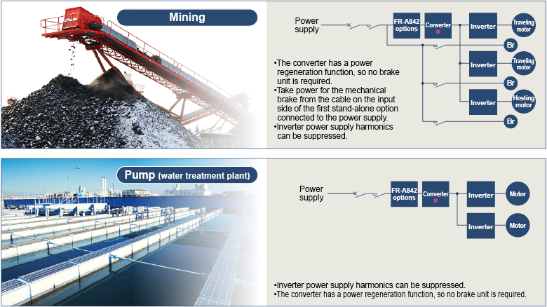

Inverters-FREQROL Produk yang direkomendasikan

Aplikasi konverter

*Inverter FR-A842 berfungsi sebagai konverter faktor daya tinggi
Konverter FR-A842 terhubung ke beberapa inverter
Hingga 10 inverter dapat dihubungkan ke satu konverter FR-A842. Pastikan kapasitas konverter lebih besar dari total kapasitas inverter atau motor yang terhubung. (Jika inverter dan motor terhubung, pilih kapasitas gabungan yang lebih besar dari inverter atau motor.) Selain itu, total kapasitas inverter atau motor harus sama dengan atau lebih tinggi dari setengah kapasitas konverter FR-A842. (Kapasitas konverter FR-A842 × 1/2 total kapasitas inverter atau motor yang terhubung Kapasitas konverter FR-A842) Jika total kapasitas inverter kurang dari setengah kapasitas konverter FR-A842, efek penekanan harmonik berkurang
- Terminal sambungan dan kabel silang mungkin diperlukan untuk pemasangan kabel beberapa inverter. Untuk ukuran kabel yang digunakan antara dua terminal sambungan, lihat deskripsi pada gambar berikut. Total kapasitas inverter sumbu dengan angka lebih tinggi harus dipertimbangkan untuk pemilihan kabel.
- Untuk sambungan beberapa inverter, tempatkan inverter berkapasitas lebih tinggi di sumbu angka lebih rendah.
- Disarankan agar sekring dihubungkan ke setiap kabel daya inverter yang digunakan antara inverter dan terminal sambungan. Pilih sekring sesuai dengan kapasitas motor. Bila menggunakan motor yang kapasitasnya lebih kecil dua tingkat atau lebih dari kapasitas inverter, pilih sekring dengan kapasitas yang satu tingkat lebih rendah dari kapasitas inverter.
- Jaga jarak kabel antara konverter dan inverter sumbu akhir pada setiap terminal dalam jarak 50 m.